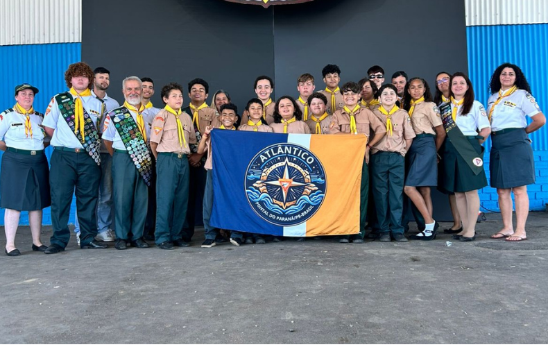

História
Hoje o Clube tem 25 desbravadores, e uma liderança de 10 pessoas, alguns irmãos que ajudam, mas Deus tem sustentado. O Clube funciona na escola Zélia do Balneário do Primavera, uma localidade carente mas muito receptiva e acolhedora. Os desbravadores são juvenis e adolescentes maravilhosos e muito talentosos com seus dons, são muito ativos e felizes no Clube.
